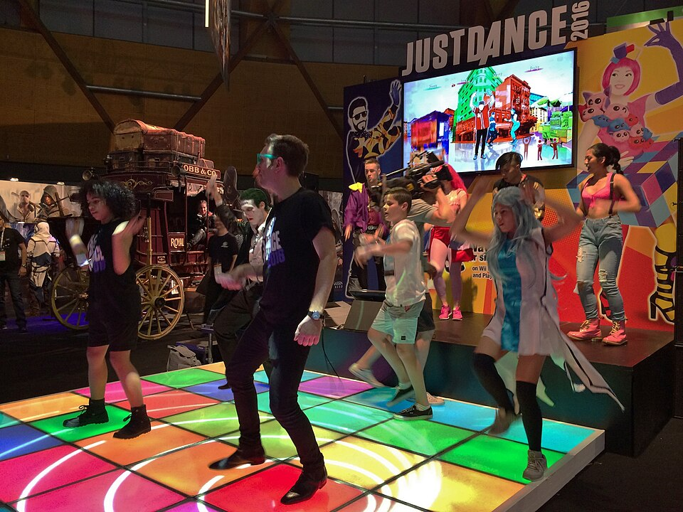
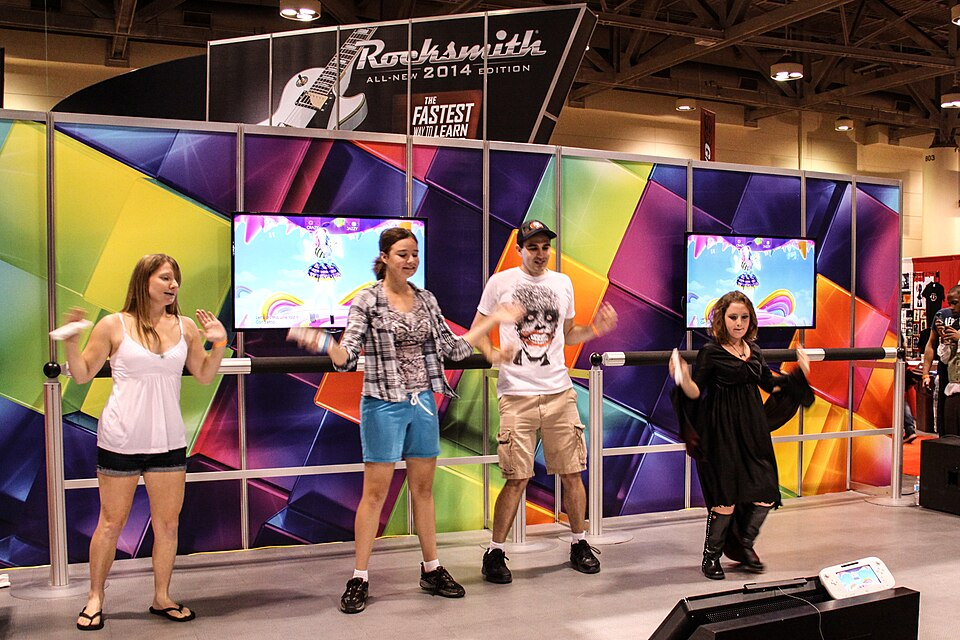
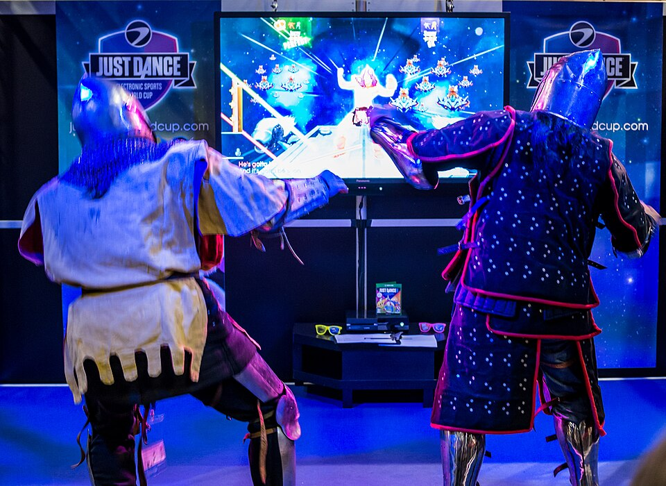

一起跳 Just Dance
跟著舞者跳，一起動起來！
結論
遊戲主要看你拿 Joy-Con 的那隻手。

這是什麼遊戲？
選一首歌
跟著舞者跳
看看得幾分
玩的時候要注意
跳兩三首就休息
打開電燈
站遠一點
不舒服就停下來
請家長留意：如果孩子或家族有癲癇或光敏感病史，玩之前請先問過醫師。如果玩的時候出現抽搐、視線異常或意識恍惚，要立刻停止並就醫。
給家長看：遊戲介紹與適合度
Just Dance（舞力全開）是 Ubisoft 推出的音樂體感遊戲，第一代在 2009 年登上 Wii，之後幾乎每年都出新版本。各版本玩法大致相同，主要差在歌單和線上服務，所以通常不必每一款都買。Switch 2 也能玩，有評測提到新版 Joy-Con 和舊版玩起來沒有明顯差別。
| 偵測方式 | 說明 |
|---|---|
| Joy-Con | Switch 上最常見的玩法，主要偵測拿著它的那隻手 |
| 手機 App | 把手機當控制器，適合多人同樂，一個房間最多 6 人 |
| Camera Controller | 透過手機 App 用鏡頭偵測動作，僅限單人，也不是每首歌都支援 |
小一、小三左右的孩子不用記按鍵就能玩，但要留意歌詞和舞蹈內容、線上功能（可用 Switch 家長監護限制），以及手足間的分數比較。畫面鮮豔刺眼時，建議一次玩 2 到 3 首、一天約 20 到 30 分鐘，開著室內燈並調低電視亮度。

